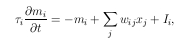

Algoritmus EA {
t := 0
initpopuláció(P(t))
fitneszszámítás(P(t))
Ciklus(amíg nincs kész) {
P'(t) := szülõválasztás(P(t))
keresztezés(P'(t))
mutáció(P'(t))
fitneszszámítás(P'(t))
P(t+1) := túlélõ(P(t),P'(t))
t := t + 1
}
}
(PROG (NOT (>= IR6 IR1)) (>=IR1 0.78) (OR (>= IR5 IR1) (>= IR3 IR3)) (OR (>= 0.32 IR3) (>= IR5 IR4)) (>=IR4 IR3) (OR (>= IR5 IR1) (>= IR6 IR3)) )
